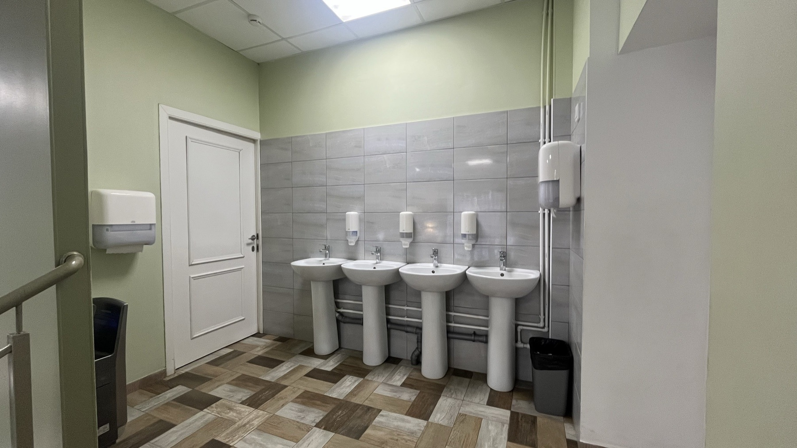

А / Обновление без замены чаш
Четыре существующие раковины, четыре зеркала и одинаковые дозаторы. Трубы остаются открытыми.
Отделка труб в цвет фона, общее зеркало и мебель с тремя чашами.
05 / Зона мытья рук
Зелёный до потолка и вокруг двери. Альтернатива с укороченной тумбой, тремя встроенными чашами и общим зеркалом освобождает место ближайшей к двери раковины.
 Проект
Проект

Исходное фотоТри встроенные чаши и общее зеркало. Трубы в цвет зелёной стены и серой плитки. Условие изготовления: сохранить нынешний подход к двери.
Открыть проект крупноЧетыре существующие раковины, четыре зеркала и одинаковые дозаторы. Трубы остаются открытыми.
Три встроенные чаши, белые матовые краны и древесный фасад. Верх труб показан зелёным в цвет стены, нижняя часть серой в цвет плитки.
Не уменьшать нынешнюю свободную ширину по всему подходу к туалету. Тумба и столешница не глубже существующих раковин и не мешают двери. По фотографии точные расстояния и движение полотна не установлены.
До демонтажа проверить необходимое количество по назначению зоны, числу пользователей и действующим требованиям. Четвёртая чаша на правой стене не включена: её место и соседнее электрооборудование требуют проверки.
NOORTH Azuma 24.04 — образец матовой мебели и интегрированных чаш. Заводская композиция на две чаши, 256 × 51 см; это не размер тумбы для ДАР. Трёхместный блок — отдельное изготовление по спецификации.
До окраски определить назначение и материал каждой линии. Подобрать совместимый грунт и покрытие, сохранить маркировку, соединения и свободный доступ к настенному устройству.
После проверки ширины и доступа можно рассмотреть узкий съёмный кожух ниже устройства, в плоскости фасада тумбы. Глухая колонна до верха плитки перекроет устройство. Для запаса расходников лучше использовать отдельный сухой отсек тумбы.
Матовые белые смесители — Paffoni Light LIG071BO: 25 278 ₽/шт., три — 75 834 ₽. Это стоимость только смесителей по карточке на 18.11.2026; партия и доставка в Ростов подтверждаются отдельно. В общую стоимость сценариев новая тумба и сантехническая переделка не включены.
Белый верх — матовое исполнение bianco opaco. Альтернативный матовый solid surface — SALINI S-Stone. Точные размеры, чаши, высота для учеников, влагозащита фасадов, опоры, сифоны и доступ к соединениям определяются до изготовления. Для бумаги рассматривается HAILO Solo 20 manual, 245 × 427 × 396 мм, если помещается в сухом отсеке. Отверстий в столешнице и растений между чашами нет.